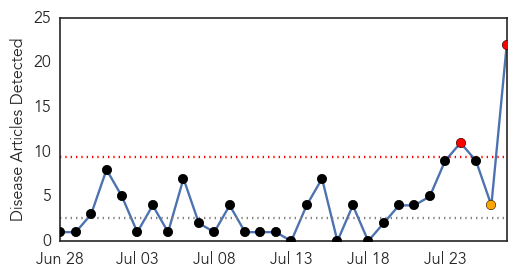
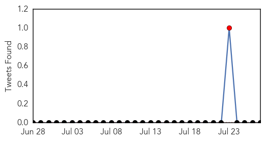

30 Day Trends
Web: 2 alerts, 1 warnings
Twitter: 1 alerts, 0 warnings
Top Articles:
- 0.998
- Lettuce, livers, berries and other leading sources of food poisoning
- 0.960
- Today, July 28, is World Hepatitis Day
- 0.953
- WARNING: Tennessee releases "Public Health Advisory" on Hepatitis C
- 0.936
- Tennessee: Hepatitis C cases triple prompting health advisory
- 0.912
- Hepatitis cure costs a fortune
- 0.912
- 2015 World Hepatitis Day: Preventing Viral Hepatitis Infections
- 0.856
- Charities to launch hepatitis C testing campaign
- 0.840
- State Health Department warns about Hepatitis C virus
- 0.829
- Opioid tampering by providers who use drugs increases risk for HCV transmission
- 0.752
- Many hepatitis carriers who need treatment not getting it: official
- 0.730
- WHO injection safety drive to help check hepatitis
- 0.710
- Hepatitis, a silent killer, with symptoms appearing late
- 0.707
- On World Hepatitis Day, Millions to Hear Messages of Testing and Treatment, not Stigma
- 0.696
- Free hepatitis-C treatment for poor on cards
- 0.679
- Russia's growing epidemic of chronic hepatitis C
- 0.657
- Should the state disclose which Maine schools face disease outbreaks?
- 0.638
- Tattoo, body piercing can put you at hepatitis risk
- 0.620
- WHO observes World Hepatitis Day with statistics
- 0.615
- More than 3,000 people in Luxembourg with Hepatitis C
- 0.584
- Living with hepatitis: Don’t be afraid
- 0.555
- Herpes and other diseases affecting native mammal population, study finds
- 0.508
- Prevention of viral hepatitis
Top Tweets:
-
No tweets found for Jul 27, 2015
Web/News Articles
Tweets
Article Locations